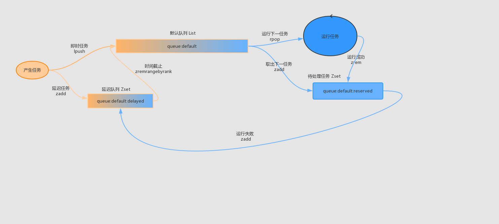

50. 消息队列任务与分发源码剖析¶
在实际的项目开发中，我们经常会遇到需要轻量级队列的情形，例如发短信、发邮件等，这些任务不足以使用 kafka 、 RabbitMQ 等重量级的消息队列，但是又的确需要异步、重试、并发控制等功能。通常来说，我们经常会使用 Redis 、 Beanstalk 、 Amazon SQS 来实现相关功能， laravel 为此对不同的后台队列服务提供统一的 API ，本文将会介绍应用最为广泛的 redis 队列。
50.1. 背景知识¶
在讲解 laravel 的队列服务之前，我们要先说说基于 redis 的队列服务。首先， redis 设计用来做缓存的，但是由于它自身的某种特性使得它可以用来做消息队列。
50.1.1. redis 队列的数据结构¶
50.1.1.1. List链表¶
redis 做消息队列的特性例如 FIFO （先入先出）很容易实现，只需要一个 list 对象从头取数据，从尾部塞数据即可。
相关的命令：（1）左侧入右侧出： lpush/rpop ；（2）右侧入左侧出： rpush/lpop 。
这个简单的消息队列很容易实现。
50.1.1.2. Zset 有序集合¶
有些任务场景，并不需要任务立刻执行，而是需要延迟执行；有些任务很重要，需要在任务失败的时候重新尝试。这些功能仅仅依靠 list 是无法完成的。这个时候，就需要 redis 的有序集合。
Redis 有序集合和 Redis 集合类似，是不包含相同字符串的合集。它们的差别是，每个有序集合的成员都关联着一个评分 score ，这个评分用于把有序集合中的成员按最低分到最高分排列。
单看有序集合和延迟任务并无关系，但是可以将有序集合的评分 score 设置为延时任务开启的时间，之后轮询这个有序集合，将到期的任务拿出来进行处理，这样就实现了延迟任务的功能。
对于重要的需要重试的任务，在任务执行之前，会将该任务放入有序集合中，设置任务最长的执行时间。若任务顺利执行完毕，该任务会在有序集合中删除。如果任务没有在规定时间内完成，那么该有序集合的任务将会被重新放入队列中。
相关命令：
ZADD添加一个或多个成员到有序集合，或者如果它已经存在更新其分数。ZRANGEBYSCORE按分数返回一个成员范围的有序集合。ZREMRANGEBYRANK在给定的索引之内删除所有成员的有序集合。
50.2. laravel 队列服务的任务调度¶
队列服务的任务调度过程如下：
laravel这边的延迟队列使用了三个队列。
- queue:default:delayed // 存储延迟任务
- queue:default // 存储“生”任务，就是未处理任务
- queue:default:reserved // 存储待处理任务
注解
Redis操作提示：
- 连接命令：
redis-cli -h {host} -p {port} -a {password}方式连接，然后所有的操作都是在交互的方式实现； - 清空所有数据：
- 删除当前数据库中的所有Key：
flushdb - 删除所有数据库中的key：
flushall
- 删除当前数据库中的所有Key：
laravel 的队列服务由两个进程控制，一个是生产者，一个是消费者。这两个进程操纵了 redis 三个队列，其中一个 List ，负责即时任务，两个 Zset ，负责延时任务与待处理任务。
生产者负责向 redis 推送任务，如果是即时任务，默认就会向 queue:default 推送；如果是延时任务，就会向 queue:default:delayed 推送。
消费者轮询两个队列( reserved 和 delayed 队列，把到期的任务从这些队列中添加到默认队列)，然后从默认队列中取出任务，先把任务放入 queue:default:reserved 中，再执行相关任务。如果任务执行成功，就会删除 queue:default:reserved 中的任务，否则会被重新放入 ``queue:default:delayed`` 队列中 （有问题，应该是让任务隔断时间再次尝试，还是呆在当前队列中）。
50.3. laravel 队列服务的总体流程¶
50.4. laravel 队列服务的注册与启动¶
laravel 队列服务需要注册的服务比较多：(该服务属于延迟加载服务)
文件 \Illuminate\Queue\QueueServiceProvider
<?php
public function register()
{
$this->registerManager(); // 注册队列管理器到app容器中，当实例化时，会注册所有定义的连接器到管理器中
$this->registerConnection(); // 使用默认连接配置建立连接，即初始化连接实例
$this->registerWorker(); // 注册消费者类，用来执行队列中的任务
$this->registerListener(); // 注册
$this->registerFailedJobServices(); // 注册任务执行失败后任务服务
}
50.4.1. registerManager 注册门面¶
registerManager 负责注册队列服务的门面类：
文件 \Illuminate\Queue\QueueServiceProvider
<?php
protected function registerManager()
{
$this->app->singleton('queue', function ($app) {
/**
* 一旦我们有了队列管理器的实例，我们将为队列连接器注册各种解析器。
* 这些连接器负责创建接受队列配置和实例化队列的类。返回QueueManager实例对象
*/
return tap(new QueueManager($app), function ($manager) {
$this->registerConnectors($manager);
});
});
}
public function registerConnectors($manager)
{
foreach (['Null', 'Sync', 'Database', 'Redis', 'Beanstalkd', 'Sqs'] as $connector) {
$this->{"register{$connector}Connector"}($manager);
}
}
protected function registerRedisConnector($manager)
{
$manager->addConnector('redis', function () {
return new RedisConnector($this->app['redis']);
});
}
QueueManager 是队列服务的总门面，提供一切与队列相关的操作接口。 QueueManager 中有一个成员变量 $connectors ，该成员变量中存储着所有 laravel 支持的底层队列服务： Database ， Redis ， Beanstalkd ， Sqs 。
文件 \Illuminate\Queue\QueueManager
<?php
class QueueManager implements FactoryContract, MonitorContract
{
public function addConnector($driver, Closure $resolver)
{
$this->connectors[$driver] = $resolver;
}
}
成员变量 $connectors 会被存储各种驱动的 connector ，例如 RedisConnector 、 SqsConnector 、 DatabaseConnector 、 BeanstalkdConnector 。
50.4.2. registerConnection 底层队列连接服务¶
接下来，就要连接实现队列的底层服务了，例如 redis ：
文件 \Illuminate\Queue\QueueServiceProvider
<?php
//调用队列管理器中的 connection() 方法来初始化默认连接实例，如 RedisQueue 实例对象
protected function registerConnection()
{
$this->app->singleton('queue.connection', function ($app) {
return $app['queue']->connection();
});
}
文件 \Illuminate\Queue\QueueManager
<?php
public function connection($name = null)
{
$name = $name ?: $this->getDefaultDriver();
/**
* 如果连接尚未解析，我们现在将解析它，因为所有连接在实际需要时才解析，因此我们开始不会对各个队列端点进行任何不必要的连接。
*/
if (! isset($this->connections[$name])) {
$this->connections[$name] = $this->resolve($name);
$this->connections[$name]->setContainer($this->app);
}
return $this->connections[$name];
}
public function getDefaultDriver()
{
return $this->app['config']['queue.default'];
}
protected function resolve($name)
{
$config = $this->getConfig($name);
return $this->getConnector($config['driver']) // 返回RedisConnector实例对象
->connect($config) // 返回RedisQueue实例对象
->setConnectionName($name); // 返回RedisQueue实例对象
}
connection 函数首先会获取 连接 名，没有 连接 名就会从 config 中获取默认的连接。
resolve 函数利用相应的底层驱动 connector 进行连接操作，也就是 connect 函数，该函数会返回 RedisQueue ：
文件 \Illuminate\Queue\Connectors\RedisConnector
<?php
class RedisConnector implements ConnectorInterface
{
public function connect(array $config)
{
return new RedisQueue(
$this->redis, $config['queue'],
Arr::get($config, 'connection', $this->connection),
Arr::get($config, 'retry_after', 60)
);
}
}
50.4.3. registerWorker 消费者服务注册¶
消费者的注册服务会返回 Illuminate\Queue\Worker 类：
<?php
protected function registerWorker()
{
$this->app->singleton('queue.worker', function () {
return new Worker(
$this->app['queue'], $this->app['events'], $this->app[ExceptionHandler::class]
);
});
}
50.4.4. registerListener消费者服务注册¶
50.4.5. 任务执行失败后服务注册¶
50.5. laravel Bus 服务注册与启动¶
定义好自己想要的队列类之后，还需要将队列任务推送给底层驱动后台，例如 redis ，一般会使用 dispatch 函数：
<?php
Job::dispatch(); // 这里的Job表示任务类类型如，ProcessPodcast.dispatch();
// 或者
$job = (new ProcessPodcast($pocast));
dispatch($job);
dispatch 函数就是 Bus 服务，专门用于分发队列任务。
dispatch 函数首先就是调用 return app(Dispatcher::class)->dispatch($job);
文件 \Illuminate\Bus\BusServiceProvider
class BusServiceProvider extends ServiceProvider
{
public function register()
{
$this->app->singleton(Dispatcher::class, function ($app) {
return new Dispatcher($app, function ($connection = null) use ($app) {
return $app[QueueFactoryContract::class]->connection($connection); // 返回指定名称的Queue实例对象，如RedisQueue对象
});
});
$this->app->alias(
Dispatcher::class, DispatcherContract::class
);
$this->app->alias(
Dispatcher::class, QueueingDispatcherContract::class
);
}
}
所以最后是实例化了 Illuminate\Bus\Dispatcher
文件 Illuminate\Bus\Dispatcher
<?php
public function dispatch($command)
{
// 如果实现ShouldQueue接口，则分发任务到队列中(异步任务)
if ($this->queueResolver && $this->commandShouldBeQueued($command)) {
return $this->dispatchToQueue($command);
}
// 否则直接调用任务(同步任务)
return $this->dispatchNow($command);
}
public function dispatchToQueue($command)
{
$connection = $command->connection ?? null;
// queueResolver是封装调用QueueManager对象connection()方法的闭包，返回Queue实例对象，如RedisQueue对象
$queue = call_user_func($this->queueResolver, $connection); // 指定连接名称(如redis)来使用那个连接，不指定使用默认驱动
if (! $queue instanceof Queue) {
throw new RuntimeException('Queue resolver did not return a Queue implementation.');
}
if (method_exists($command, 'queue')) {
return $command->queue($queue, $command);
}
return $this->pushCommandToQueue($queue, $command);
}
protected function pushCommandToQueue($queue, $command)
{
if (isset($command->queue, $command->delay)) { // 发送到指定队列的延时命令
return $queue->laterOn($command->queue, $command->delay, $command);
}
if (isset($command->queue)) { // 发送到指定队列的命令
return $queue->pushOn($command->queue, $command);
}
if (isset($command->delay)) { // 发送到默认队列的延时命令
return $queue->later($command->delay, $command);
}
return $queue->push($command); // 发送到默认队列的命令
}
这里的 queue 就是队列的范畴了，假设我们用的队列是 redis 。最终这里落入的是 Illuminate/Queue/RedisQueue.php 文件的 RedisQueue 对象中。
文件 Illuminate\Queue\RedisQueue
<?php
class RedisQueue extends Queue implements QueueContract
{
public function push($job, $data = '', $queue = null)
{
return $this->pushRaw($this->createPayload($job, $data), $queue);
}
public function pushOn($queue, $job, $data = '')
{
return $this->push($job, $data, $queue);
}
public function later($delay, $job, $data = '', $queue = null)
{
return $this->laterRaw($delay, $this->createPayload($job, $data), $queue);
}
public function laterOn($queue, $delay, $job, $data = '')
{
return $this->later($delay, $job, $data, $queue);
}
}
我们先看 push ， push 函数调用 pushRaw ，在调用之前，要把任务类进行序列化，并且以特定的格式进行 json 序列化：
<?php
protected function createPayload($job, $data = '', $queue = null)
{
$payload = json_encode($this->createPayloadArray($job, $data, $queue));
if (JSON_ERROR_NONE !== json_last_error()) {
throw new InvalidPayloadException;
}
return $payload;
}
protected function createPayloadArray($job, $data = '', $queue = null)
{
return is_object($job)
? $this->createObjectPayload($job)
: $this->createStringPayload($job, $data);
}
protected function createObjectPayload($job)
{
return [
'job' => 'Illuminate\Queue\CallQueuedHandler@call',
'maxTries' => isset($job->tries) ? $job->tries : null,
'timeout' => isset($job->timeout) ? $job->timeout : null,
'data' => [
'commandName' => get_class($job),
'command' => serialize(clone $job),
],
];
}
protected function createStringPayload($job, $data)
{
return ['job' => $job, 'data' => $data];
}
格式化数据之后，就会将 json 推送到 redis 队列中，对于非延时的任务，直接调用 rpush 即可：
<?php
public function pushRaw($payload, $queue = null, array $options = [])
{
$this->getConnection()->rpush($this->getQueue($queue), $payload);
return Arr::get(json_decode($payload, true), 'id');
}
对于延时的任务，会调用 laterRaw ，调用 redis 的有序集合 zadd 函数:
<?php
protected function laterRaw($delay, $payload, $queue = null)
{
$this->getConnection()->zadd(
$this->getQueue($queue).':delayed', $this->availableAt($delay), $payload
);
return Arr::get(json_decode($payload, true), 'id');
}
protected function availableAt($delay = 0)
{
return $delay instanceof DateTimeInterface
? $delay->getTimestamp()
: Carbon::now()->addSeconds($delay)->getTimestamp();
}
这样，相关任务就会被分发到 redis 对应的队列中去。
50.6. 队列监听部分¶
队列监听命令来自于： php artisan queue:work
文件 \Illuminate\Queue\Console\WorkCommand
<?php
public function __construct(Worker $worker) // 需要注入Worker类对象
{
parent::__construct();
$this->worker = $worker;
}
public function handle()
{
if ($this->downForMaintenance() && $this->option('once')) {
return $this->worker->sleep($this->option('sleep'));
}
/**
* 我们将监听已处理和失败的事件，以便我们可以在处理作业时将信息写入控制台，
* 这样开发人员就可以通过队列查看哪些作业正在进行，并了解其进度。
*/
$this->listenForEvents();
$connection = $this->argument('connection')
?: $this->laravel['config']['queue.default'];
/**
* 我们需要获得在应用程序的队列配置文件中设置的连接的正确队列。
* 我们将根据为当前正在执行的队列操作运行的连接来提取它。
*/
$queue = $this->getQueue($connection); // 获取连接操作的队列
$this->runWorker(
$connection, $queue
);
}
protected function runWorker($connection, $queue)
{
$this->worker->setCache($this->laravel['cache']->driver()); // 配置缓存
// 根据命令选项来调用Worker对象中对应的方法
return $this->worker->{$this->option('once') ? 'runNextJob' : 'daemon'}(
$connection, $queue, $this->gatherWorkerOptions()
);
}
文件 \Illuminate\Queue\Worker
<?php
public function daemon($connectionName, $queue, WorkerOptions $options)
{
$this->listenForSignals(); // 监听信号来回调对应函数
$lastRestart = $this->getTimestampOfLastQueueRestart(); //
while (true) {
/**
* 在保存任何任务之前，我们将确保此队列不会暂停，
* 如果是，我们将暂停此工作进程一段时间，并确保我们不需要完全终止此工作进程。
*/
if (! $this->daemonShouldRun($options, $connectionName, $queue)) {
$this->pauseWorker($options, $lastRestart); // 是否暂停和停止进程
continue;
}
/**
* 首先，我们将尝试从队列中取出下一个作业。
* 我们还将注册超时处理程序并重置此作业的警报，以便它不会永远陷入冻结状态。
* 然后，我们可以开始执行这个任务。
*/
$job = $this->getNextJob(
$this->manager->connection($connectionName), $queue
);
$this->registerTimeoutHandler($job, $options);
/**
* 如果守护程序应该运行（不在维护模式等），那么我们可以运行此作业以进行处理。 否
* 则，我们将需要让Workder进程睡眠，以便在处理之前不再处理任何工作。
*/
if ($job) {
$this->runJob($job, $connectionName, $options);
} else {
$this->sleep($options->sleep);
}
// Finally, we will check to see if we have exceeded our memory limits or if
// the queue should restart based on other indications. If so, we'll stop
// this worker and let whatever is "monitoring" it restart the process.
$this->stopIfNecessary($options, $lastRestart);
}
}
50.7. 创建任务¶
50.7.1. queue 设置¶
<?php
'redis' => [
'driver' => 'redis',
'connection' => 'default',
'queue' => 'default',
'retry_after' => 90,
],
一般来说，默认的 redis 配置如上， connection 是 database 配置中 redis 的连接名称； queue 是 redis 中的队列名称，值得注意的是，如果使用的是 redis 集群的话，这个需要使用 key hash tag ，也就是 {default} 。当任务运行超过 retry_after 这个时间后，该任务会被重新放入队列当中。
50.7.2. 任务类的创建¶
- 任务类的结构很简单，一般来说只会包含一个让队列用来调用此任务的
handle方法。 - 如果想要使得任务被推送到队列中，而不是同步执行，那么需要实现
Illuminate\Contracts\Queue\ShouldQueue接口。 - 如果想要让任务推送到特定的连接中，例如
redis或者sqs，那么需要设置conneciton变量。 - 如果想要让任务推送到特定的队列中去，可以设置
queue变量。 - 如果想要让任务延迟推送，那么需要设置
delay变量。 - 如果想要设置任务至多重试的次数，可以使用
tries变量； - 如果想要设置任务可以运行的最大秒数，那么可以使用
timeout参数。 - 如果想要手动访问队列，可以使用 trait :
Illuminate\Queue\InteractsWithQueue。 - 如果队列监听器任务执行次数超过在工作队列中定义的最大尝试次数，监听器的
failed方法将会被自动调用。failed方法接受事件实例和失败的异常作为参数：
<?php
class ProcessPodcast implements ShouldQueue
{
use Dispatchable, InteractsWithQueue, Queueable, SerializesModels;
protected $podcast;
public $connection = 'redis';
public $queue = 'test';
public $delay = 30;
public $tries = 5;
public $timeout = 30;
public function __construct(Podcast $podcast)
{
$this->podcast = $podcast;
}
public function handle(AudioProcessor $processor)
{
// Process uploaded podcast...
if (false) {
$this->release(30);
}
}
public function failed(OrderShipped $event, $exception)
{
//
}
}
50.7.3. 任务事件¶
<?php
class AppServiceProvider extends ServiceProvider
{
public function boot()
{
//任务运行前
Queue::before(function (JobProcessing $event) {
// $event->connectionName
// $event->job
// $event->job->payload()
});
//任务运行后
Queue::after(function (JobProcessed $event) {
// $event->connectionName
// $event->job
// $event->job->payload()
});
//任务循环前
Queue::looping(function () {
while (DB::transactionLevel() > 0) {
DB::rollBack();
}
});
//任务失败后
Queue::failing(function (JobFailed $event) {
// $event->connectionName
// $event->job
// $event->exception
});
//异常发生后
Queue::exceptionOccurred(function (JobFailed $event) {
// $event->connectionName
// $event->job
// $event->exception
});
}
}
https://laravel-china.org/articles/4169/analysis-of-laravel-message-queue